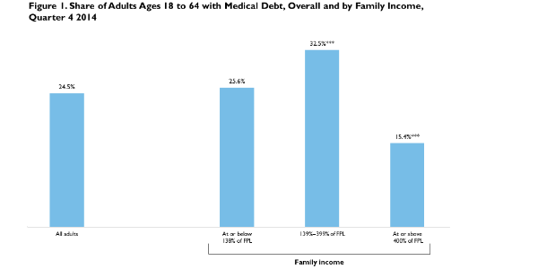

|  |
|
||
Most Adults with Medical Debt Had Health Insurance at the Time the Debt Was Incurred
Michael Karpman and Sharon K. LongMay 21, 2015
Medical debt has long been a challenge for American families, leading to financial problems and unmet health care needs (Doty, Edwards, and Holmgren 2005; Herman, Rissi, and Walsh 2011; Himmelstein et al. 2009; Kalousova and Burgard 2013; Pollitz et al. 2014; Zeldin and Rukavina 2007). The Affordable Care Act (ACA) is expected to reduce medical debt by both expanding access to health insurance coverage and increasing the financial protection that insurance provides against large medical bills. ACA provisions include requirements that plans cover a standard set of essential health benefits, prohibitions against denying coverage to adults or charging them more for insurance based on preexisting conditions, income-based cost-sharing reductions for adults purchasing coverage through health insurance Marketplaces, elimination of annual limits on coverage, and the establishment of limits on annual out-of-pocket costs for covered, in-network services. These provisions, which went into effect on January 1, 2014, should reduce the accumulation of medical debt for those with health insurance coverage going forward, but they do not address medical debt acquired during periods of uninsurance or debt that was acquired in earlier periods.
In this brief, we use the Urban Institute’s Health Reform Monitoring Survey (HRMS) to examine medical debt—medical bills that are being paid off over time—among nonelderly adults (ages 18 to 64) and their families as of December 2014. We explore the reasons why families incur medical debt and how experiences with medical debt differ by family income. Our analysis sheds light on the potential gains from insurance coverage and policies designed to protect insured individuals from financial risk by enhancing the adequacy of coverage.
What We Did
Drawing on HRMS data collected in December 2014, we focus on nonelderly adults who report that they or someone in their family have medical bills that are being paid off over time.1 This includes bills being paid off with a credit card, through personal loans, or through bill-paying arrangements with providers, as well as debt from the current year or earlier years.
We refer to those who report family medical bills that are being paid off over time as adults with medical debt, and we analyze medical debt for all adults and by family income groups. We focus on adults in three income groups based on the eligibility thresholds for the ACA’s Medicaid expansion and Marketplace subsidies: low income (at or below 138 percent of the federal poverty level [FPL]), middle income (between 139 and 399 percent of FPL), and high income (at or above 400 percent of FPL). For some parts of the analysis, we also examine adults with public and private coverage separately.
Adults with medical debt are asked if that debt was from periods with or without health insurance. For those who report medical debt from periods with insurance coverage, they are asked whether the medical bills were for services that were not covered by the health plan; co-payments or coinsurance for services under the health plan; or bills that were paid before the health plan’s deductible was applied. Respondents could choose multiple response options. For this analysis, we combine responses for the last two categories to analyze the share with medical debt resulting from cost sharing under a health plan.
Though the question asking respondents whether they have medical debt was adapted from the 2014 National Health Interview Survey, questions on whether the medical bills underlying the debt were from periods with or without health insurance and the reasons for receiving those medical bills were developed for the HRMS.
What We Found
Nearly 1 in 4 adults reports medical debt, and medical debt is most common among middle-income adults.
An estimated 24.5 percent of adults report family medical bills that are being paid off over time, with middle-income adults more likely to report medical debt than adults in other income groups (figure 1). Nearly one-third (32.5 percent) of middle-income adults have medical debt, compared with 25.6 percent of low-income adults and 15.4 percent of high-income adults. These results are generally consistent with patterns seen in other survey data on medical debt (Cohen and Kirzinger 2014; Collins et al. 2015) and show that many adults do not pay all of their medical bills at the time they are received.
Among those with medical debt, 7 in 10 adults incurred all of this debt during periods with health insurance coverage.
Most adults with family medical bills that are being paid off over time report that some or all of the bills underlying that debt were from periods when they or their family member had insurance. This includes 70.3 percent who report that all of their debt was accrued during periods with insurance and 12.9 percent who report that their debt was from periods both with and without insurance (figure 2).2 Only 16.5 percent incurred all of their medical debt from periods without insurance. These estimates are similar to the results of an earlier study showing that 70 percent of nonelderly adults who reported medical debt stated that they or their family member had insurance at the time of receiving care that led to the medical debt (Doty, Edwards, and Holmgren 2005).
However, insurance status at the time the debt was incurred varies significantly by income, with low-income adults more likely to incur debt from periods without insurance and adults with high incomes more likely to incur debt from periods with insurance. For example, nearly one-third (31.9 percent) of low-income adults with medical debt reported that the debt was only from periods without insurance, compared with 12.7 percent of middle-income adults and 4.4 percent of high-income adults (figure 2).
Middle-income adults are more likely than other adults to incur medical debt from services not covered by a health plan and from cost sharing.
Nearly 1 in 10 adults (9.2 percent) reports medical debt incurred during periods with insurance from services that were not covered by a health plan, and just over 1 in 7 adults (14.5 percent) report medical debt from cost sharing under a health plan (figure 3). Approximately the same share of adults reported medical debt from co-payments and coinsurance as the share reporting medical debt from a deductible (11.0 percent and 11.1 percent, respectively; data not shown).
Middle-income adults are more likely to report medical debt from these sources than other adults. As shown in figure 3, 12.7 percent of all middle-income adults report medical debt from uncovered services, compared with 9.3 percent of low-income adults and 5.5 percent of high-income adults. The differences among income groups were even larger with respect to medical debt from cost sharing. Over one in five middle-income adults (21.2 percent) reported medical debt from cost sharing, compared with 9.6 percent of low-income adults and 11.3 percent of high-income adults. Middle-income adults were also more likely than other adults to report debt from different types of cost sharing, with 15.7 percent reporting debt from co-payments or coinsurance and 16.3 percent with debt from a deductible (data not shown).
As noted above, family medical debt among low-income adults is less likely to be from periods with insurance than family medical debt among adults in other income categories. Among those with medical debt from periods with insurance, low-income adults were the most likely to report debt from care that was not covered by a health plan (53.5 percent versus 44.9 percent for middle-income adults and 37.5 percent for high-income adults; data not shown) and the least likely to report debt from cost sharing (55.5 percent versus 75.1 percent for middle-income adults and 77.2 percent for high-income adults; data not shown). These differences in the sources of medical debt are likely caused, at least in part, by the varying structures of public and private coverage. Compared with private coverage, cost sharing is more limited under Medicaid and other public sources of coverage, particularly for families with incomes at or below 100 percent of FPL.3 However, states have some flexibility to limit the range and scope of benefits provided to adults under Medicaid, including limiting optional benefits such as dental and vision care. Middle- and high-income families often have access to private plans offering a more generous range of benefits.
Although we do not have information on the type of insurance coverage held by adults or their family members at the time their medical debt was incurred, we examined the source of family medical debt for adults with different insurance coverage types at the time of the survey. We found that adults with public coverage at the time of the survey were less likely than those with employer-sponsored or nongroup coverage to report medical debt from cost sharing under a health plan (10.1 percent versus 17.8 percent; figure 4) but about equally likely to report medical debt from services that were not covered by a health plan (9.0 percent versus 9.7 percent).
What It Means
Medical debt continued to be an issue for American families at the end of 2014, with an estimated one in four nonelderly adults reporting medical debt. Further, medical debt is more of a challenge for middle-income adults, who lack the public coverage options available to low-income adults and lack the financial resources of high-income adults. Of some concern, most adults incurred their family medical debt during periods with health insurance coverage. Therefore, expanding health insurance coverage under the ACA may reduce but not eliminate the burden of medical debt for families.
Our finding that much of the reported medical debt was incurred during periods with insurance coverage suggests that changes in covered services and cost-sharing requirements would cushion the impacts of higher medical bills for low- and middle-income families. Medical debt resulting from uncovered services was reported by 9.3 percent of low-income adults and 12.7 percent of middle-income adults. Though this study does not identify the types of services that are missing from the health plans, previous work has shown that dental care, which is seldom covered by Medicaid or private health insurance plans, is often difficult to afford for low-income adults (Long 2014). Improving access to dental care under Medicaid and the Marketplace, which is not addressed under the ACA, would likely have a significant impact on medical debt for low- and middle-income adults.
Medical debt caused by cost-sharing is also common, affecting more than 1 in 5 middle-income adults and about 1 in 10 low-income and high-income adults. Given that one-quarter of nonpoor, nonelderly households with private insurance do not have enough liquid assets to cover a midrange deductible of $1,200 for single coverage (Claxton, Rae, and Panchal 2015), policies to further reduce cost sharing could potentially lower the number of families with medical debt. For instance, Basic Health Programs established in Minnesota and New York offer lower cost sharing than health plans available through the Marketplace.4 In addition, greater transparency around health plan types and provider networks for plans sold through the Marketplace could improve plan choice and raise consumers’ awareness of their exposure to out-of-network and tiered network cost sharing (Blumberg et al. 2014).
References
Blumberg, Linda J., Rebecca Peters, Erik Wengle, and Rachel Arnesen. 2014. Physician Network Transparency: How Easy Is It for Consumers to Know What They Are Buying? Washington, DC: Urban Institute.
Claxton, Gary, Matthew Rae, and Nirmita Panchal. 2015. Consumer Assets and Patient Cost Sharing. Menlo Park, CA: Kaiser Family Foundation.
Claxton, Gary, Matthew Rae, Nirmita Panchal, Heidi Whitmore, Anthony Damico, and Kevin Kenward. 2014. “Health Benefits in 2014: Stability in Premiums and Coverage for Employer-Sponsored Plans.” Health Affairs 33 (10): 1851—60.
Cohen, Robin A., and Whitney K. Kirzinger. 2014. Financial Burden of Medical Care: A Family Perspective. Hyattsville, MD: National Center for Health Statistics.
Collins, Sara R., Petra W. Rasmussen, Michelle M. Doty, and Sophie Beutel. 2015. The Rise in Health Care Coverage and Affordability Since Health Reform Took Effect. New York: The Commonwealth Fund.
Doty, Michelle M., Jennifer N. Edwards, and Alyssa L. Holmgren. 2005. Seeing Red: Americans Driven Into Debt by Medical Bills. New York: The Commonwealth Fund.
Herman, Patricia M., Jill J. Rissi, and Michele E. Walsh. 2011. “Health Insurance Status, Medical Debt, and Their Impact on Access to Care in Arizona.” American Journal of Public Health 101 (8): 1437—43.
Himmelstein, David U., Deborah Thorne, Elizabeth Warren, and Steffie Woolhandler. 2009. “Medical Bankruptcy in the United States, 2007: Results of a National Study.” The American Journal of Medicine 122: 741—46.
Kalousova, Lucie, and Sarah A. Burgard. 2013. “Debt and Forgone Medical Care.” Journal of Health & Social Behavior 54 (2): 203—19.
Long, Sharon K. 2014. Beyond Coverage: The High Burden of Health Care Costs on Insured Adults in Massachusetts. Boston, MA: Blue Cross Blue Shield Foundation of Massachusetts.
Pollitz, Karen, Cynthia Cox, Kevin Lucia, and Katie Keith. 2014. Medical Debt among People with Health Insurance. Menlo Park, CA: Kaiser Family Foundation.
Zeldin, Cindy, and Mark Rukavina. 2007. Borrowing to Stay Healthy: How Credit Card Debt Is Related to Medical Expenses. New York: Demos.
About the Series
This brief is part of a series drawing on the HRMS, a quarterly survey of the nonelderly population that is exploring the value of cutting-edge Internet-based survey methods to monitor the ACA before data from federal government surveys are available. The briefs provide information on health insurance coverage, access to and use of health care, health care affordability, and self-reported health status, as well as timely data on important implementation issues under the ACA. Funding for the core HRMS is provided by the Robert Wood Johnson Foundation and the Urban Institute.
For more information on the HRMS and for other briefs in this series, visit www.urban.org/hrms.
About the Authors
Michael Karpman is a research associate and Sharon K. Long is a senior fellow in the Urban Institute’s Health Policy Center.
Notes 1 The HRMS question on medical debt is adapted from the National Health Interview Survey. However, our estimates may understate the share of adults with medical debt if respondents do not include bills that they are unable to pay when reporting whether they have “bills being paid off over time.” In addition to reporting the share of adults with bills being paid over time, some studies using National Health Interview Survey data have separately reported the estimated share of adults who currently have medical bills that they are unable to pay at all (Cohen and Kirzinger 2014). 2 Previous studies have also shown that most adults with medical debt had insurance at the time their debt was incurred (Doty, Edwards, and Holmgren 2005). 3 For Medicaid deductible and co-payment amounts, see Centers for Medicare and Medicaid Services, “Cost Sharing Out of Pocket Costs,” accessed March 27, 2015. For an analysis of cost-sharing amounts among plans sold in the federal Marketplace, see Gary Claxton and Nirmita Panchal, “Cost Sharing Subsidies in Federal Marketplace Plans,” last updated February 11, 2015. For an analysis of cost-sharing amounts under employer-sponsored plans, see Claxton et al. (2014). 4 New York State of Health, “Press Release: NY State of Health Announces the Expansion of Private Health Insurance Coverage through Innovative New Program,” April 17, 2015; Cheryl Fish-Parcham, “Why Minnesota and New York Are Pursuing Basic Health Programs,” Families USA, November 18, 2014.
|

 |
 |
 |